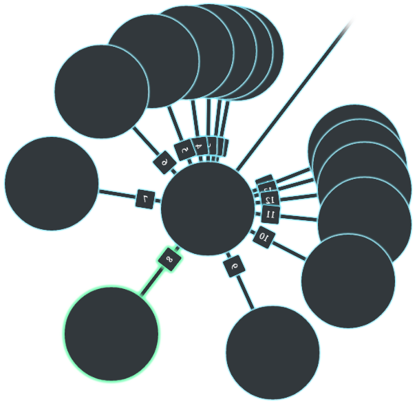

Description
How to install and run
- Make sure that you have NodeJS and GlobalsDB installed properly;
-
Download end extract the latest version;
-
Change default setting in config.js file by editing it. Examine and
change the next variables:
-
database.databases.primaryDB
-
server.masterPassword
-
Make sure GlobalsDB is running;
-
Start the server from run.js file;
-
By default, client will be available on
127.0.0.1:80.
How to use
On client application (mobile or web) you have to join to your server first.
Enter server's ip address with port on which server application placed
(57775 by the default) and master password, which was set up in
config.js.
Next, you need to login and connect to GlobalsDB Adapter. Username,
password and namespace fields are required. Also you need to choose
configured database to connect to from dropdown menu.
And now everything ready! If you are using PC with keyboard, try play with
the next keys: up, down, left, right, enter, backspace, esc. And if you are
using touchscreen or mouse, there's some things to note. Select nodes to
move through by clicking on them. Select an option (delete or edit node) by
clicking on node dimension (link between two nodes). Scroll a set of nodes
by pressing and holding finger or cursor on the node in the set.
Welcome to GlobalsDB Admin project homepage!

GlobalsDB Admin is the visual admin interface for GlobalsDB.
This is official GlobalsDB Admin project's homepage. Here you can download
the latest version of GlobalsDB Admin, find out an up-to-date information
about project developing and check out how does it work.
The server application is available for NodeJS interface. Client
application is also available as Web application or as an apk file for your
Android device.